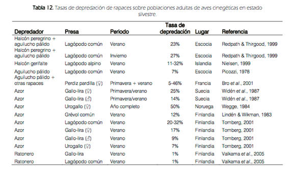

- Aspectos aplicados de la depredación
- El papel del ser humano en la biosfera desde la perspectiva de la depredación.
- Manejo de especies en peligro de extinción
- Especies que están en peligro por razones relacionadas con la depredación.
- Lince ibérico
- Hiperespecialista en cazar conejos.
- Al borde de la extinción
- Caza descontrolada (considerado alimaña)
- Declive generalizado de las poblaciones de conejo
- Caza insostenible.
- Enfermedades
-
- Creación de pastizales para que se alimenten las presas.
- Repoblación con conejos.
- Vacunación de conejos.
- Creación de hábitats para que viva el conejo.
- Control de depredadores para aumentar el número de presas
- Consiste en reducir el número de depredadores con la creencia de que esto aumentará el de presas.
- En España se puede aplicar a zorros, urracas, perros y gatos asilvestrados. Requiere autorización.
- ¿Funciona? Solo tenemos algunas evidencias parciales
- Depende de la tasa de depredación.
- 
- En ambientes Mediterráneos, donde el clima es variable, las relaciones presa-depredador no son tan intensas.
-
- Depreda solo entre 1-5% de los conejos y perdices.
- En términos generales parece que el águila perdicera no compite con los cazadores.
-
- Control biológico
- Método de control de plagas agrícolas o forestales que consiste en introducir depredadores de las mismas.
-
- Al usar un depredador específico, no hay efectos nocivos colaterales
- Se limita el uso de pesticidas.
- Desventajas
- La especie introducida puede naturalizarse y expandirse. Especies invasoras.
- Sapo introducido en Australia para controlar poblaciones de un escarabajo que comía caña de azúcar.
- No funcionó y ahora hay problemas con el sapo porque compite con anfibios locales.
- La especie introducida puede salir del hábitat inicial y afectar a la especie diana en otros territorios.
- Ej. mixomatosis en el conejo australiano.